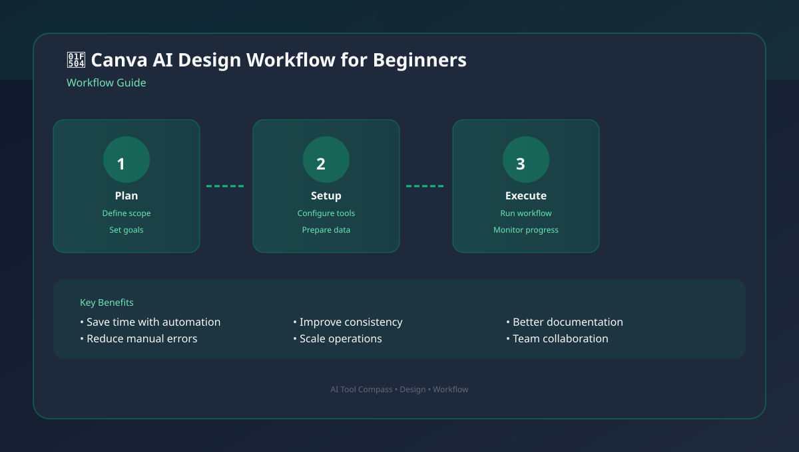
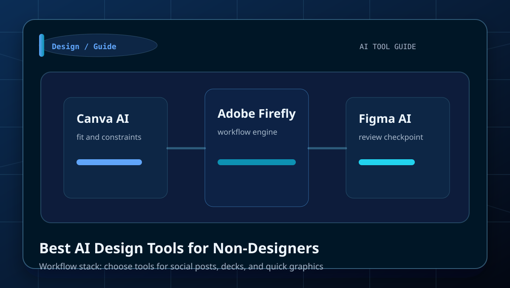
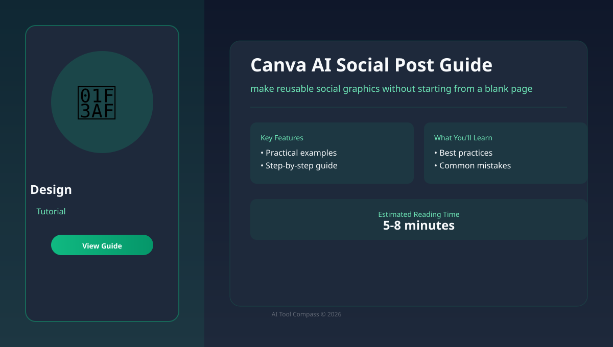
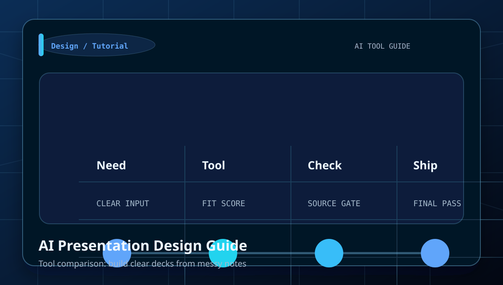
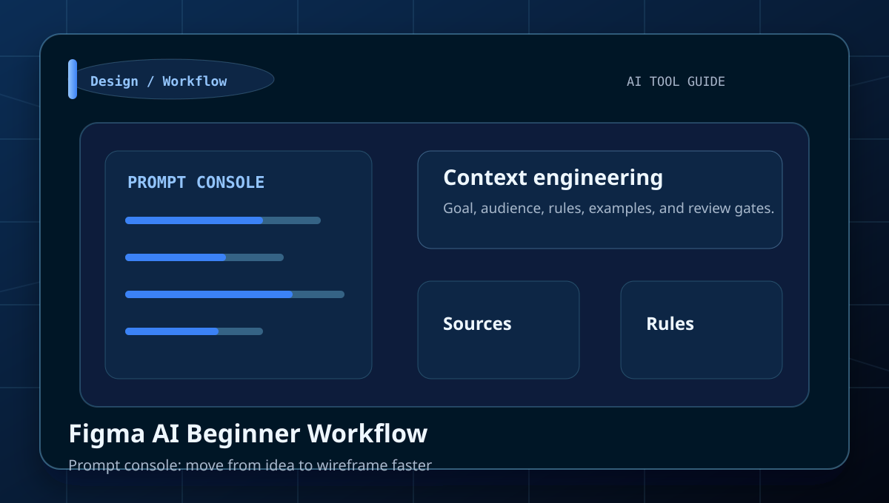
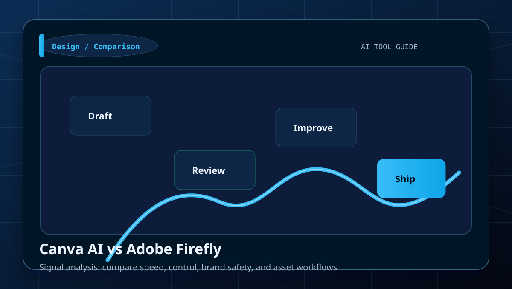
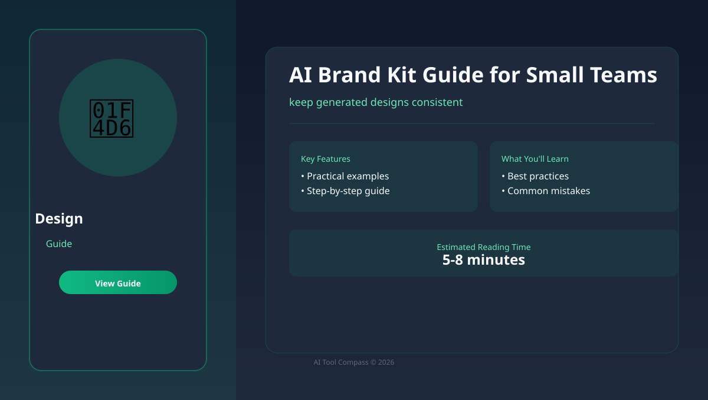
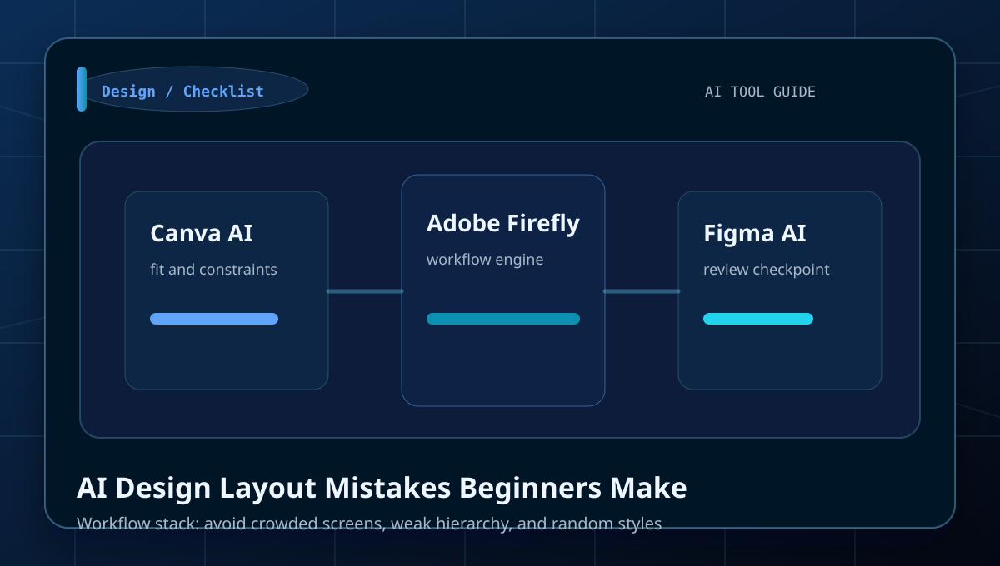
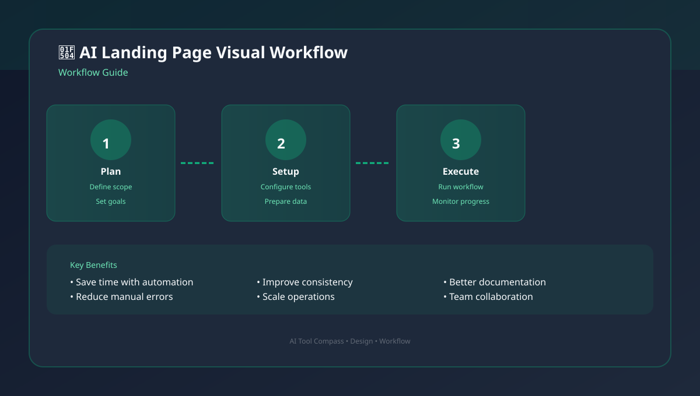
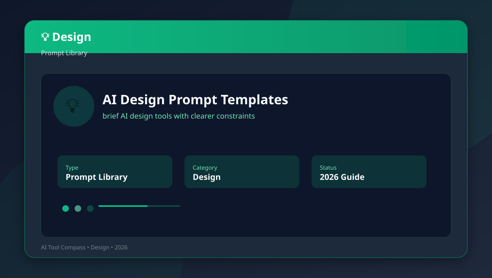

Best AI Design Tools for Non-Designers
Start here if you want the fastest overview before drilling into narrower use cases.
Open starting guideCategory
Tutorials, comparisons, prompt examples, and beginner workflows for social posts, decks, landing graphics, brand kits, and non-designer production.
social posts, decks, landing graphics, brand kits, and non-designer production.
Use the comparison tables to decide which tool fits each job.
Start here
A strong category page should not make the reader guess which article matters first. These picks route a beginner into the fastest useful next step.
Start here if you want the fastest overview before drilling into narrower use cases.
Open starting guideUse a comparison page before you choose a subscription, workflow, or default tool in this cluster.
Open comparisonMove from tool discovery into a repeatable sequence that helps a beginner finish an actual task.
Open workflowUse a prompt library or checklist to tighten output quality before you publish, ship, or pay.
Open prompt or checklistUse the cluster well
This layer is here to increase search utility: when to use the category, what to compare, and how to avoid wasting a subscription on the wrong task.
You need help with social posts, decks, landing graphics, brand kits, and non-designer production and want a task-first route instead of opening tools at random.
Do not treat brand awareness as proof. Use the comparison pages to check workflow fit, output quality, and review burden first.
Pick one guide, test one real task, and only then decide whether this cluster needs a paid tool or just a better workflow.
Look for pages with examples, prompts, checklists, and mistake prevention. Those are stronger than generic tool roundups.
Library

Learn how to turn a short brief into polished practical assets with a clear workflow, examples, and beginner mistakes to avoid.

Learn how to choose tools for social posts, decks, and quick graphics with a clear workflow, examples, and beginner mistakes to avoid.

Learn how to make reusable social graphics without starting from a blank page with a clear workflow, examples, and beginner mistakes to.

Learn how to build clear decks from messy notes with a clear workflow, examples, and beginner mistakes to avoid.

Learn how to move from idea to wireframe faster with a clear workflow, examples, and beginner mistakes to avoid.

Learn how to compare speed, control, brand safety, and asset workflows with a clear workflow, examples, and beginner mistakes to avoid.

Learn how to keep generated designs consistent with a clear workflow, examples, and beginner mistakes to avoid.

Learn how to avoid crowded screens, weak hierarchy, and random styles with a clear workflow, examples, and beginner mistakes to avoid.

Learn how to create visuals that support conversion-focused pages with a clear workflow, examples, and beginner mistakes to avoid.

Learn how to brief AI design tools with clearer constraints with a clear workflow, examples, and beginner mistakes to avoid.